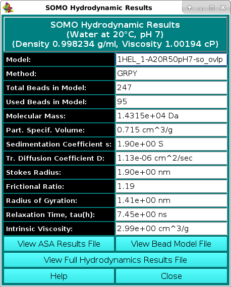

| |
Manual |

The Show Hydrodynamic Calculations pop-up window reports the most commonly used subset of the hydrodynamic parameters computed by US-SOMO, as shown in the picture above. If the SMI or ZENO methods have been used to calculate them, some fields will not be populated. For instance, starting from the February 2021 release SMI calculations will not report anymore values for the rotational diffusion parameters (like the Relaxation time tau(h)) and for the intrinsic viscosity. Recent tests (2020; see the introductory history at the beginning of the US-SOMO main Help section) have revealed that SMI calculations are not reliable for the rotational diffusion and intrinsic viscosity calculations. ZENO does not compute rotational diffusion properties, so the Relaxation time tau(h) field will not be populated if this computational method is used.
The full list is automatically saved in a file under extensions that depend on the computational method used: *.hydro_res for SMI, *.zno for ZENO, and *.grpy_res for GRPY. The solvent type and conditions used are also shown in the upper frame. These files can be visualized by pressing the View Full Hydrodynamic Results File button at the bottom of this panel. On pressing it, a pop-up like this one will appear:
presenting the choice of automatically opening the last produced hydrodynamic results file (Yes button), going to the file system to select another file (No button), or cancel the operation (Cancel button).
The other two buttons below the parameters' listing allow visualizing two of the files produced during bead model generation:
View ASA Results File will directly take you to the file system where you can select any *.asa_res file, that will be opened with a text editor.
Likewise, View Bead Model File will directly take you to the file system where you can select any *.bead_model file, that will be opened with a text editor.
This document is part of the UltraScan Software Documentation
distribution.
Copyright © notice.
The latest version of this document can always be found at:
Last modified on February 27, 2021.